Arcade of Struthers: aponeurotic band from medial
intermuscular septum to medial head triceps (~5.7 cm proximal to
epicondyle)
Only major nerve on opposite side of axis of joint
rotation → vulnerable to compression + traction with
flexion
FCU innervation: avg 3.4 branches (Tubbs); FDP ring/small: 3 cm
distal to medial epicondyle
DCU branches 7 cm proximal to wrist → key
localizing feature
At wrist: 2 fascicular bundles — sensory (volar/ulnar) and motor
(dorsal/radial)
Motor distribution: hypothenar (ADM, FDM, ODM, palmaris brevis), 3
palmar + 4 dorsal interossei, lumbricals 3-4, adductor pollicis, deep
head FPB
Most terminal motor branches are farthest from
plexus of any terminal brachial plexus branch → high injuries
have worst prognosis for intrinsic recovery
Froment sign: thumb IP hyperflexion during lateral
pinch (lost adductor pollicis + deep FPB → FPL overpowers EPL)
Pinch grip decreased 50-75%; 75% of thumb adduction
power lost
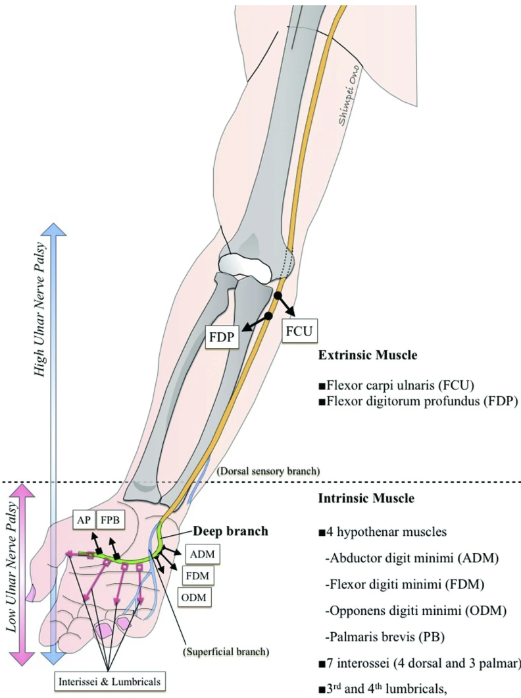
Ulnar motor anatomy — extrinsic (FCU, FDP
ring/small) muscles are lost above the level marked “high ulnar palsy”;
the intrinsics (hypothenars, interossei, 3rd/4th lumbricals, adductor
pollicis, deep FPB) are lost in both high and low palsy. (ASSH
Handthology)
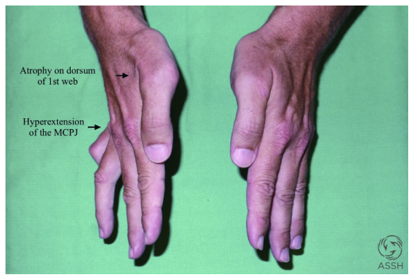
Duchenne’s sign — ring and small finger
clawing (MCP hyperextension, PIP flexion) with atrophy on the dorsum of
the first web. (ASSH Handthology)
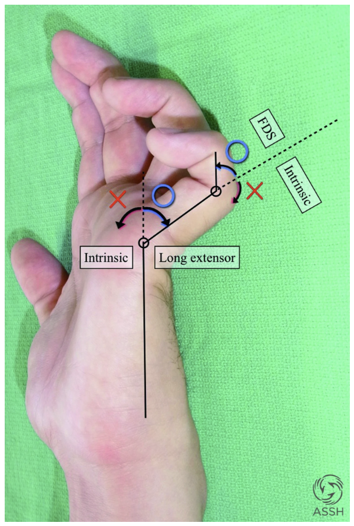
Mechanism of Duchenne’s sign — with the
interossei denervated, the extrinsic extensors hyperextend the MCP while
the median-innervated FDS keeps unopposed flexor tone at the PIP. (ASSH
Handthology)
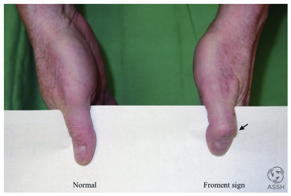
Froment’s sign — on attempted key pinch
the thumb IP hyperflexes as FPL substitutes for the denervated adductor
pollicis and deep FPB. (ASSH Handthology)
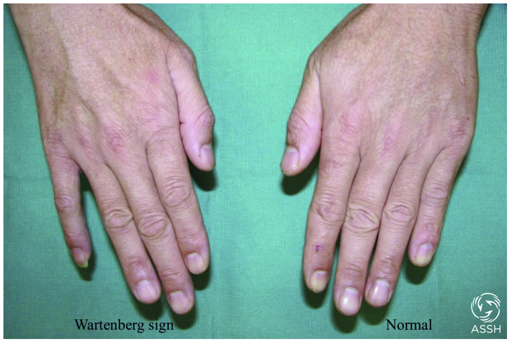
- “Roll-up flexion”: extrinsics flex MCPs only after IP
terminal flexion → pushes objects out of palm - Bouvier
maneuver: passively flex MCPs → ask patient to extend IPs -
Positive = central slip competent → “simple” claw hand
- Negative = “complex” claw hand → then assess passive
IP motion (flexible vs stiff) - Full passive ROM
required before any tendon transfer
Key decision point: Bouvier test determines
reconstruction strategy. Positive Bouvier = simple claw = Zancolli lasso
or capsulodesis. Negative Bouvier = complex claw = Stiles-Bunnell or
ECRL 4-tail to restore IP extension.
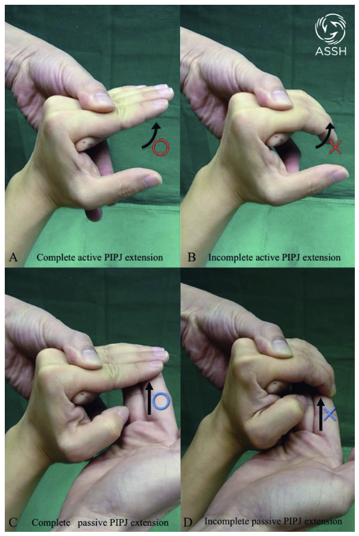
Bouvier maneuver — with the MCPs
passively held in flexion, ask for active IP extension.
A complete active PIP extension (positive) = competent
central slip = simple claw. B incomplete active PIP
extension (negative) = complex claw. C/D then test
passive PIP extension: flexible (C) can proceed to transfer, stiff (D)
needs therapy first. (ASSH Handthology)
Electrodiagnostics
Same principles as cubital tunnel; NAP across neuroma-in-continuity
= 90% continued recovery
Avulsion/blast/GSW: wait 2-3 weeks for zone demarcation
Resect to healthy fascicles; tension-free; epineurial suture ±
fibrin glue
Anterior transposition can reduce nerve gap by ~4
cm
Nerve Transfers
AIN → Ulnar Motor (End-to-End) - Indicated for high
ulnar injury proximal to elbow - AIN harvested at PQ; coapt to
proximally transected ulnar motor fascicle - Contraindications: late
presentation (> 9-12 mo), concurrent median injury
Supercharge End-to-Side (SETS) - Epineurial window
in ulnar motor fascicle 8-10 cm proximal to wrist; AIN sutured
end-to-side - Indicated for: severe cubital tunnel, axonotmetic
elbow/forearm injury, Parsonage-Turner - Supplements, doesn’t replace,
recovery from proximal repair
Radial → Ulnar Motor - For combined median + ulnar
injury: PIN branches (EDM + ECU) → ulnar motor (Tung)
Bertelli Distal Transfer - Opponens pollicis branch
→ terminal deep branch ulnar nerve → reinnervates FDI + adductor
pollicis for pinch
Sensory Transfers - Palmar median branches → ulnar
digital nerve of small finger - Combined median + ulnar palsy: PIN at
wrist → DCU for ulnar border sensation
Tendon
Transfers — Simple Claw Hand (Positive Bouvier)
Zancolli MCP Capsulodesis (1957) - Static procedure;
distally based volar plate flap → advanced proximally → anchored to MC
neck - MCP held at 40-50° flexion; splint x 4 wk -
Limitation: stretches over time → only 47% satisfactory
at > 12 mo (Brown)
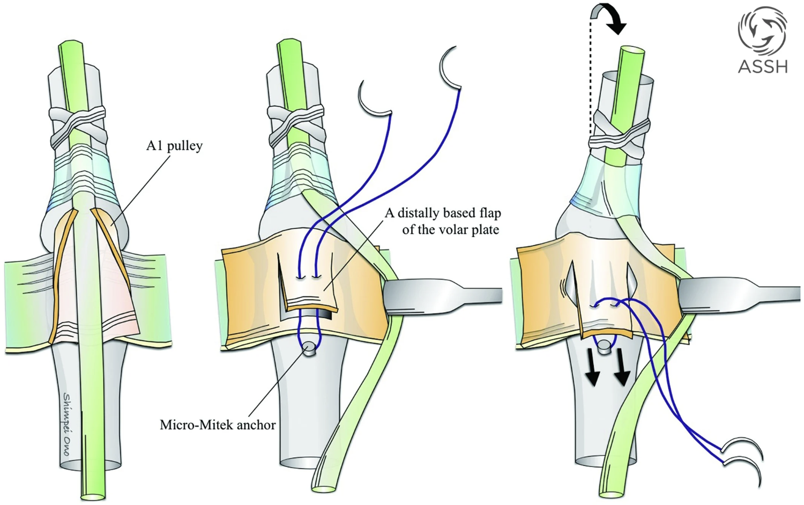
MCP joint capsulodesis — after releasing
the A1 pulley, a distally-based volar plate flap is raised, advanced
proximally, and secured to the metacarpal neck with a suture anchor,
holding the MCP in flexion. (ASSH Handthology)
Zancolli FDS Lasso - Dynamic; FDS divided at A3
(distal to Camper’s chiasm) → retrieved under A2 → wrapped around A1 →
sutured to itself - Tensioned: wrist neutral, MCP 40° (ring), 50°
(small) - High UN palsy: harvest long finger FDS, split into 2 tails →
wrap ring + small A1 pulleys - Tenodesis effect modulates flexion with
wrist position
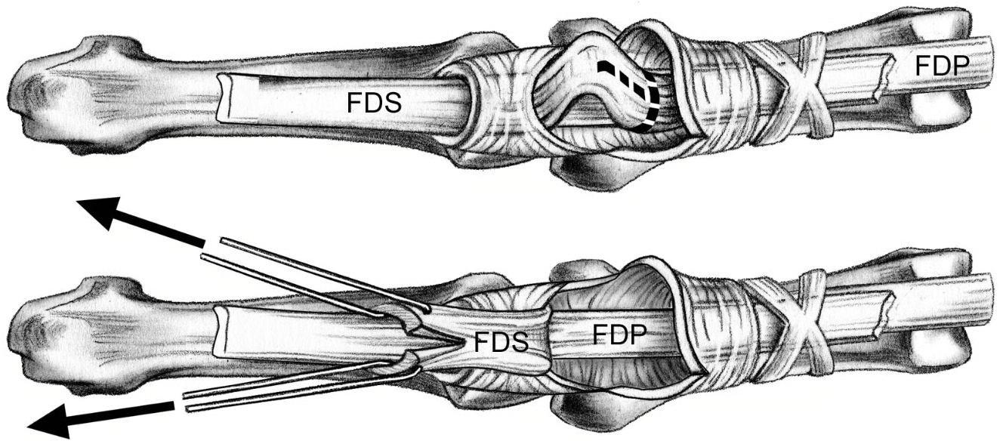
Zancolli FDS lasso — the FDS is sectioned
(through an A3 window or the A1–A2 interval), withdrawn between A1 and
A2, looped around the A1 pulley, and sewn back to itself, holding the
MCP flexed. (ASSH Handthology)
Stiles-Bunnell FDS 4-Tail - Harvest FDS long + ring
(low palsy) or long only (high palsy) - Split into 4 tails → insert into
radial lateral bands of long/ring/small + ulnar lateral band of index -
Pass palmar to deep transverse metacarpal ligament
(maintains volar axis to MCP) - Tensioned: wrist neutral, MCP 60-70°
flexion - Don’t use with positive Bouvier (creates swan
neck)
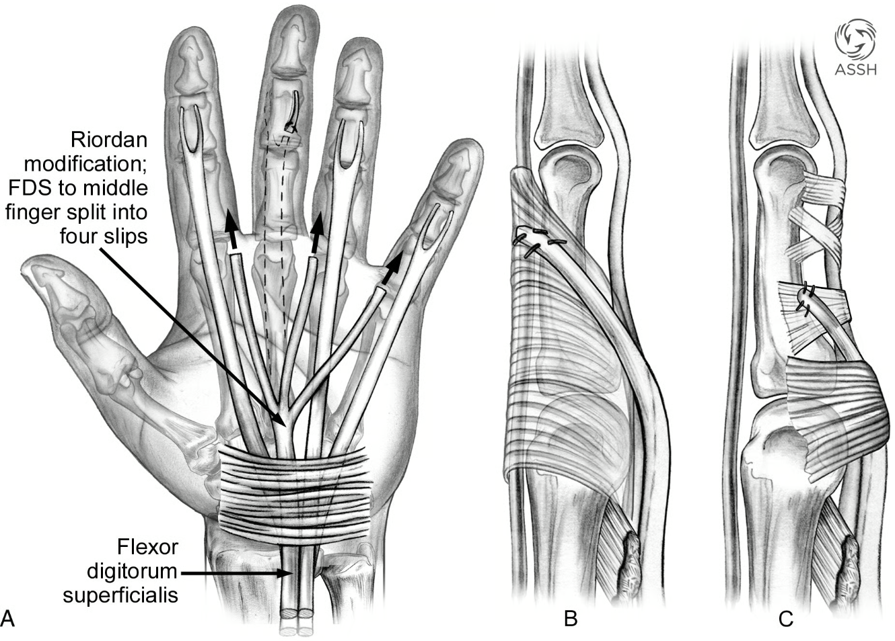
Stiles-Bunnell FDS 4-tail — the FDS (long
± ring) is harvested distally, the ulnar slips left sutured to the PIP
volar plate to reduce swan-neck, and the donor is split into four tails.
(ASSH Handthology)
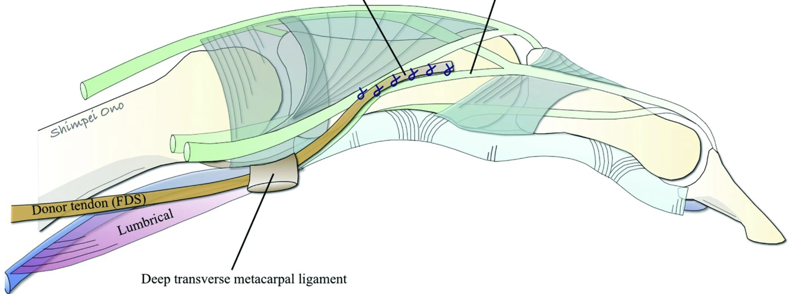
Stiles-Bunnell — each tail is passed
palmar to the deep transverse metacarpal ligament,
keeping the transfer volar to the MCP axis so it flexes the MCP and
extends the IP (reproducing intrinsic function). (ASSH
Handthology)
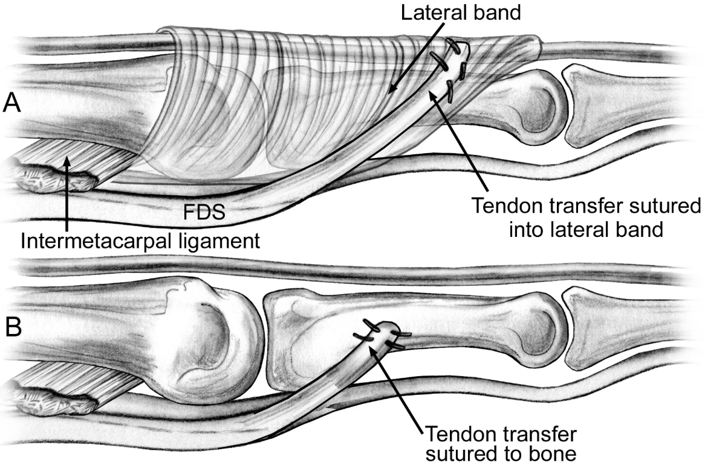
Stiles-Bunnell — insertion options:
A the lateral band, B the proximal
phalanx (bone), or C looped around the A1 pulley. (ASSH
Handthology)
ECRL 4-Tail (Brand) - ECRL harvested at index MC
base; elongated with 4 palmaris graft tails - Tunneled dorsal→volar in
2nd/3rd/4th interspaces → sutured to lateral bands - Used when FDS
unavailable (combined injury) or joint hyperlaxity - More adhesion-prone
due to graft interposition
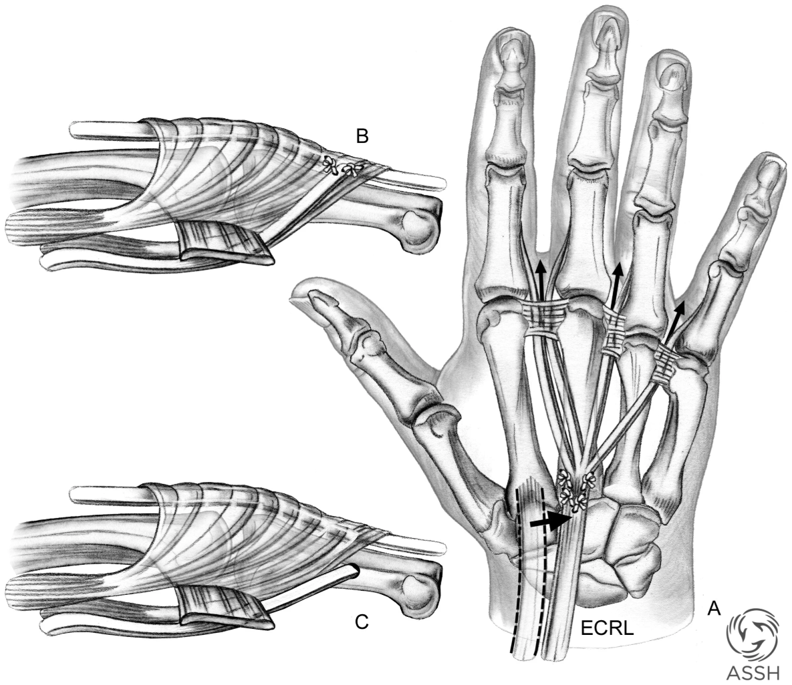
ECRL 4-tail (Brand) — the ECRL is
harvested at the index metacarpal base and elongated with four palmaris
graft tails, tunneled dorsal-to-volar in the 2nd/3rd/4th interspaces,
passed palmar to the DTML, and sutured into the lateral bands (or,
alternatively, the proximal phalanges). (ASSH Handthology)
Thumb Adduction — Smith
Transfer (ECRB)
ECRB harvested from long MC base → elongated with free graft
Tunneled superficial to extensor retinaculum → dorsal-to-volar
between long + ring MCs → ulnar thumb MCP at adductor pollicis
insertion
Tenodesis: wrist extension → thumb abducts; wrist flexion → thumb
adducts
Results: 50% contralateral lateral pinch, 63% adduction force
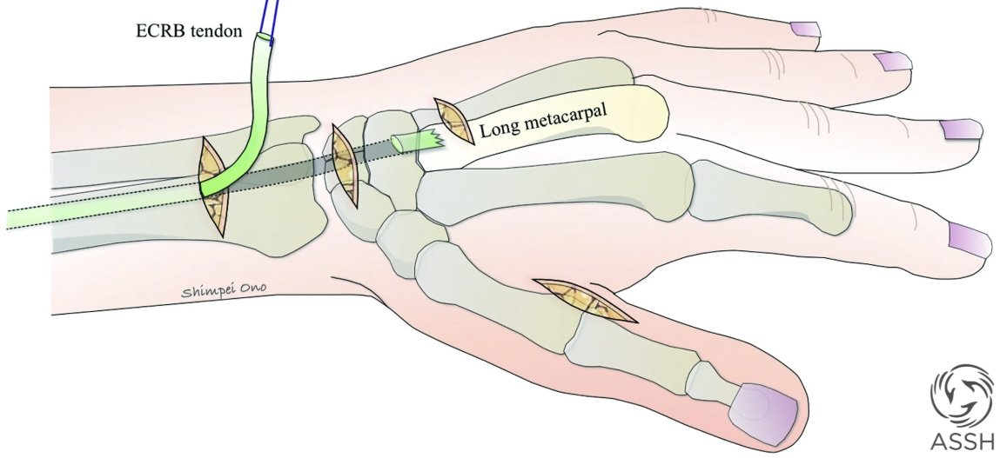
Smith adductorplasty — the ECRB is
harvested from the long-finger metacarpal base and withdrawn through a
counter-incision proximal to the extensor retinaculum. (ASSH
Handthology)
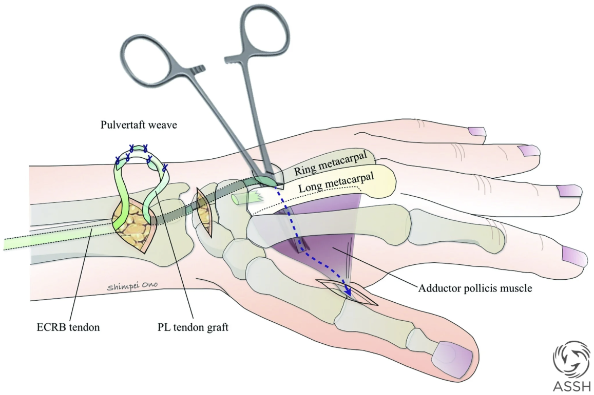
Smith adductorplasty — the ECRB is
elongated with a PL graft, tunneled dorsal-to-volar between the long and
ring metacarpals, and Pulvertaft-woven into the adductor pollicis
insertion at the ulnar thumb. (ASSH Handthology)
Wartenberg’s Sign Correction
Split EDM: ulnar half of EDM → radial collateral
ligament of small MCP (deep to remaining EDM, palmar to DTML)
EIP transfer: EIP + extensor hood strip → small
finger radial lateral band
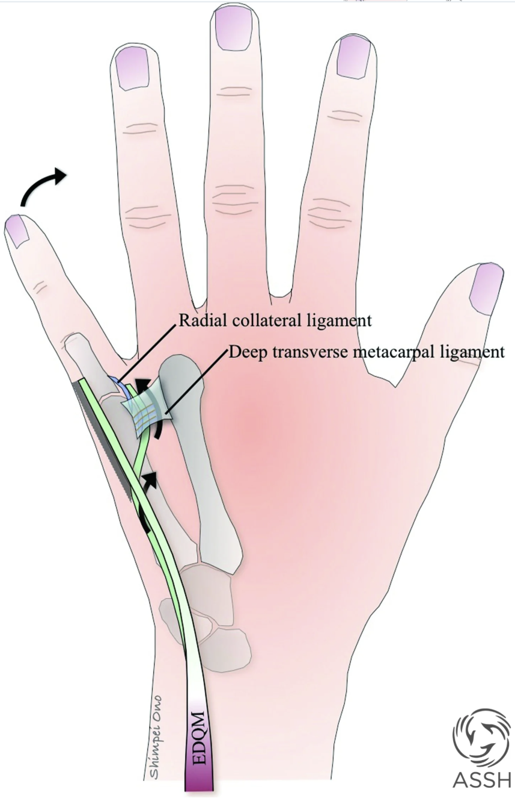
Split EDM transfer for Wartenberg’s sign
— the ulnar half of the EDM is released and split proximally, passed
deep to the radial half and palmar to the DTML, and sutured into the
radial collateral ligament of the small-finger MCP. (ASSH
Handthology)
FDP Side-to-Side (High Ulnar
Palsy)
Long FDS removed; FDP ring + small sutured side-to-side to FDP
long
FDP index left independent
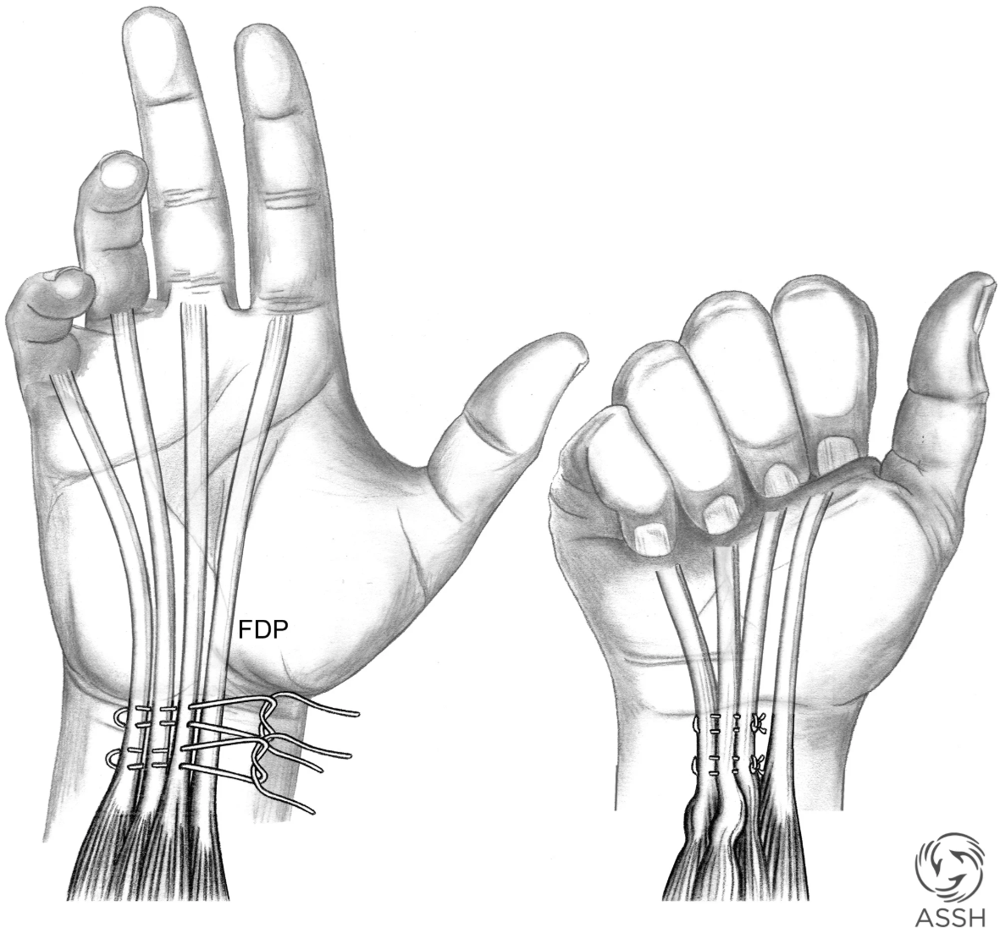
- “Reverse cascade” tensioning — all 3 flex to palm in unison
Post-op / Rehab
Nerve transfers: 4 stages — acute
(splint/edema/pain), early motor re-education at 3 wk (mirror therapy),
strengthening once voluntary twitch, functional ADL use
Capsulodesis: dorsal blocking splint MCP 60°
flexion x 4 wk; thermoplastic → night splint until 8 wk
Stiles-Bunnell / ECRL 4-tail: splint wrist neutral,
MCP 60° flexion, IPs full extension; thermoplastic at 4 wk; free IPs at
6 wk; activities at 6-8 wk
Smith transfer: splint wrist 30° extension, thumb
palmar abducted x 4 wk → 4 more weeks; activities at 6 wk
Complications & Outcomes
Ulnar nerve: worst prognosis of 3 major UE nerves — Seddon: only 31%
good sensory, 13% good motor recovery
High repairs far worse than low (long regeneration to
intrinsics)
Children < 12: 87% complete recovery; adolescents 12-20:
67% (Chemnitz)
Capsulodesis: stretches over time; only 47% satisfactory clawing
resolution (Brown, 44 pts)
FDS 4-tail + ECRL 4-tail both correct extensor lag equally; lag >
30° improves 45%; < 30° improves 75%
Smith transfer: 50% contralateral lateral pinch strength; adding
index abductorplasty → 75% pinch but unacceptable index posture
Ulnar paradox: less clawing with high palsy (seems counterintuitive)
— because FDP ring/small is also denervated
Bouvier maneuver is the key decision point: positive → static/lasso;
negative → 4-tail transfer
Don’t use Stiles-Bunnell in a patient with positive Bouvier —
creates iatrogenic swan neck
Lumbrical bar splinting early prevents progression from simple →
complex claw
Riche-Cannieu anastomosis (77%) can mask ulnar motor deficits —
intrinsic function may be partially preserved via median crossover
Anterior transposition reduces gap by ~4 cm — consider before
defaulting to graft
Late presentation, failed repair, long gaps → tendon transfers;
outcomes limited by scar, line-of-pull challenges
Board-Style Questions (5)
Q: A patient with a high ulnar nerve laceration has
less clawing than expected. Why? — A: The “ulnar
paradox” — FDP to ring and small fingers is also denervated in high
lesions, so the extrinsic flexors cannot overpower the extensors at the
IP joints, resulting in less apparent clawing.
Q: A patient with ulnar claw hand has a positive
Bouvier maneuver and full passive ROM. What is the simplest surgical
option? — A: Zancolli FDS lasso (dynamic, modulates
with wrist position) or MCP capsulodesis (static, simpler but stretches
over time).
Q: Which tendon transfer restores thumb adduction
in ulnar nerve palsy? — A: Smith transfer — ECRB
elongated with free graft, tunneled dorsal-to-volar between long and
ring metacarpals, to the adductor pollicis insertion at the ulnar thumb
MCP.
Q: What nerve transfer provides “anti-clawing” by
restoring intrinsic function after proximal ulnar nerve injury? —
A: AIN-to-motor branch of ulnar nerve (end-to-end); the
“supercharge” end-to-side variation can supplement recovery from
proximal repair.
Q: In a complex claw hand (negative Bouvier), why
must the Stiles-Bunnell FDS 4-tail pass palmar to the deep transverse
metacarpal ligament? — A: To maintain the volar axis
relative to the MCP joint — this ensures the transfer flexes the MCP and
extends the IPs (replicating intrinsic function) rather than just
flexing the digit.
References
Zancolli EA. Claw-hand caused by paralysis of intrinsic muscles.
J Bone Joint Surg Am. 1957;39(5):1076-1080.
Smith RJ. ECRB tendon transfer for thumb adduction — power pinch.
J Hand Surg Am. 1983;8(1):4-15.
Barbour J, et al. Supercharged end-to-side AIN to ulnar motor nerve
transfer. J Hand Surg. 2012;37(10):2150-2159.
Chemnitz A, et al. Functional outcome 30 years after median + ulnar
nerve repair in childhood. J Bone Joint Surg Am.
2013;95(4):329-337.
Brand PW. Paralytic claw hand; sublimis transfer of Stiles and
Bunnell. J Bone Joint Surg Br. 1958;40(4):618-632.